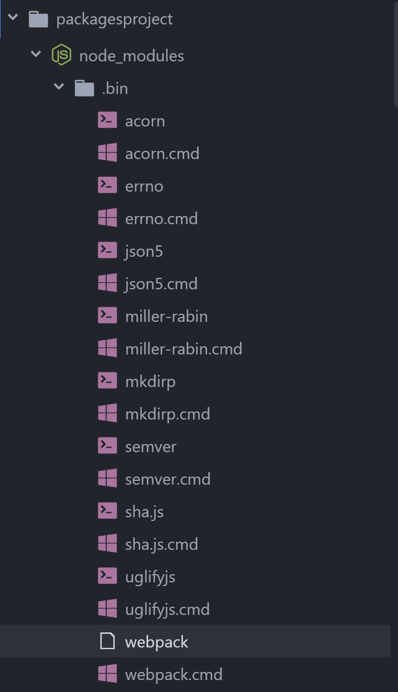
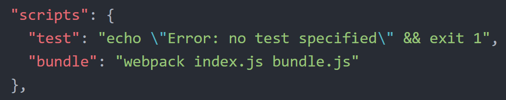

npm Scripts & Browserify-like Webpack
Earlier we used Browserify to bundle our JavaScript files. Webpack is another tool that developers use as it offers similar & yet more robust capabilities. However, after using Browserify, it can be intimidating to use Webpack, so let's tackle it.
In your CLI, make sure pwd [your current working directory] is packagesproject.
First, we need to install Webpack. Instead of installing it globally [like we did with Browserify], we're going to install it to our project. In your CLI, type:
npm install webpack --save-devThis installs the Webpack package and adds it to your package.json in the
devDependenciessection. We install it as a dev dependency since we only want to use the package for the development of our project and we won't be including Webpack with our application in production.You can install either Browserify or Webpack globally [with
-gflag or locally to the project]. We're installing Webpack to our project to illustrate the difference.You can use Webpack very similar to Browserify. Delete the bundle.js file from your project & in your CLI type:
webpack index.js bundle.jsWhat's that? You got an error?
'webpack' is not recognized as an internal or external command, operable program or batch file.Oh yea, that's because we installed Webpack locally.
Let's use the
webpackcommand out of our project's local node_modules. In your CLI, type:./node_modules/.bin/webpack index.js bundle.js
If you open the generated bundle.js file, you'll notice it's larger than the Browserify version. Your code is in there (might use Atom's search b/c it's a bit hidden in there), lodash is in there and there is some extra Webpack code in there that enables Webpack to do its own thing.
Obviously having to type
./node_modules/.bin/webpack index.js bundle.jseverytime you want to build your file isn't ideal. Let's add an npm script to make our lives easier. Open your package.json file in Atom.There is already a script in there, look for the following:
"scripts": { "test": "echo \"Error: no test specified\" && exit 1" },Add a comma at the end of the line that starts with
"test"(after the ending quote) & hit enter.On the new line, type:
"bundle": "webpack index.js bundle.js"It should look like the following:

Whoa. Why didn't you have to include the
./node_modules/.bin/in front ofwebpack?That's because since the package is installed locally to the project, the npm script can find the command by simply using the command name.
Now, you can run the npm script by typing the following in your CLI:
npm run bundleAnything in the scripts portion can be run with
npm run <propertyName>, where propertyName is whatever you've set in the quotes before the:.
Webpack with Config
So using Webpack like Browserify was pretty straightforward, but you're probably not going to find anything like that in a real life project. So let's jump into a more realistic example.
In your packagesproject directory, create a new file & name it: webpack.config.js
Open the webpack.config.js in Atom and add the following & save the file:
module.exports = { entry: './index.js', output: { filename: './bundle.js' } };The module.exports is a bit out of scope for tonight's session. We'll cover it a bit next month, but it is basically exposing the entry and output properties so that the Webpack utility can find and use them.
entry is our main JavaScript file [like the main property we specified in our package.json]
output can take multiple properties, but we're only going to use one, the filename - which is the file name we want to use for the bundled JavaScript file
Now that you have the config file set up, you can use the
webpackcommand by itself to generate the bundle.js file. Since we don't have Webpack installed globally, we'd still have to do./node_modules/.bin/webpack, so let's add a couple scripts to make our lives easier.Open package.json in Atom & add the following scripts:
"build": "webpack", "minbuild": "webpack -p", "watch": "webpack --watch"Scroll up to our earlier example if you need a reminder on where to add these.
Let's try running each of these scripts. In your CLI, type:
npm run buildThis command works just like our Browserify or earlier Webpack commands, the bundle.js has our code, lodash & some Webpack code.
Now, let's do the one with the
-pflag. In your CLI, type:npm run minbuildThe
-pflag is short for production and using it makes your bundle.js file ready for production. What does that mean? In short, it minifies the bundle.js file. Open the bundle.js file in Atom & take a look. It should like a bunch of random letters/numbers all squished together.Minification is meant to reduce the file size, which in turn means the file can load faster in a browser and boost your application's performance. In minification, extra whitespace is removed [spaces between words/logic, line breaks -- all of it]. It takes your very descriptive variable/method names and replaces them with a few letters that appear random.
They just appear random, the variable/method names still match up in the code base, so your application still runs the same as it did before. [Take the variable
wine. It would be replaced everywhere in the code withw.]When you're working on a large project, the code can get very large, so minifying helps to make the application's performance better with files reduced in size.
Watch, this is going to be fun [pun intended]. In your CLI, type:
npm run watchWebpack is now watching your code for changes. That means you can update the code in index.js & when you save the file, Webpack will automatically update the bundle.js file. If you reload index.html in Chrome, you'll see the updates without having to run a command.
In order to stop the watch command from continuing to run in the CLI, we need to stop it. On a Mac, the shortcut is cmd + c. On Windows, the shortcut is ctrl + c.
So that's fun, but refreshing is one more step. We can do better. In your CLI, type:
npm install webpack-dev-server --save-devThis is installing another Webpack package.
Open your package.json in Atom and add the following script:
"start": "webpack-dev-server --open"This script will start the webpack-dev-server.
Open your webpack.config.js file in Atom. Add a
,after the closing curly brace foroutputand add the following:devServer: { contentBase: './' }This is telling the webpack-dev-server what directory to look for file changes, which is the root/top-level directory of our project.
The webpack.config.js file should look like this:
module.exports = { entry: './index.js', output: { filename: './bundle.js' }, devServer: { contentBase: './' } };In the CLI, type
npm run startThe dev server is now watching your code & will automatically reload the browser, if you make any changes.
Open index.html in Chrome, and open index.js in Atom. If you can, make them side-by-side, so you can see Chrome, while you make a change to the code.
Update
whitein index.js to beblueand save the file. Chrome should automagically refresh and show you the new code.